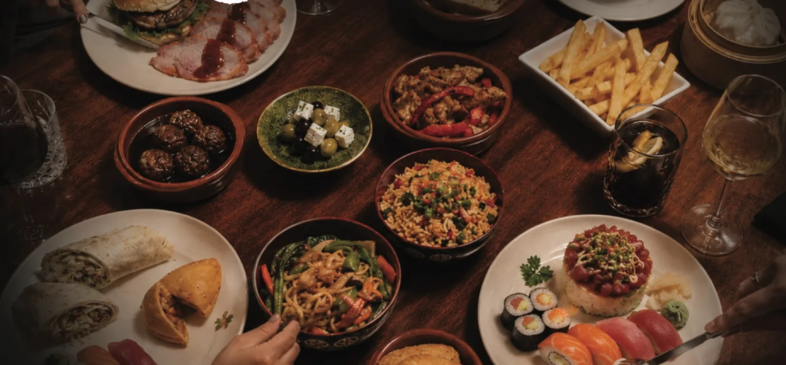
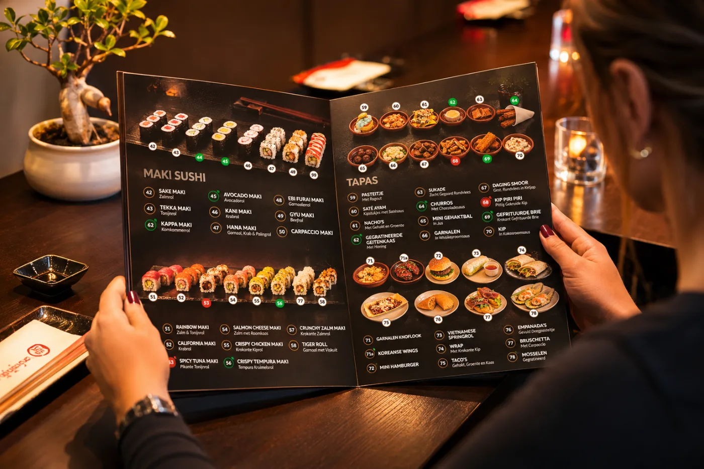
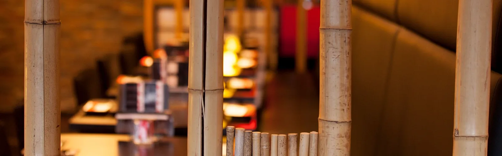

Bedrijfsuitje
Sluit uw bedrijfsevenement af of vier het met zakenrelaties of collega's, in een van onze aparte ruimtes.

Wereld tapas, grill en sushi in Vlijmen
Meer dan 140 gerechten, van sushi tot lamskotelet en van babi pangang tot geitenkaas. Eén vaste prijs, géén tijdslimiet.
Kom voor een culinaire ontdekkingstocht naar ons wereld tapas restaurant. U wordt uitgebreid verwend met Japanse vlees- en visspecialiteiten en een ruime sortering tapasgerechtjes, met liefde en vakmanschap bereid.
Honden en andere dieren zijn helaas niet toegestaan, met uitzondering van hulphonden.

All-you-can-eat, per persoon. Consumpties rekent u apart af.
€ 40,95
€ 42,95
Feestdagen met uitzondering van Kerst, zie Kerst 2026.
Viert u uw verjaardag bij Jatapasu, dan krijgt u een leuk presentje van het huis. Ook geldig de dag ervoor en de dag erna. Geef het door bij uw reservering; wij kunnen om legitimatie vragen.
Op vertoon van een 65+ pas 10% korting op het all-you-can-eat arrangement van die persoon.
Recent een maagoperatie gehad? Op vertoon van uw medische pas 10% korting op uw eigen arrangement.
Komt u met een groep, regel het verdelen van de consumpties dan graag onderling. U krijgt een gespecificeerde rekening, zodat u ziet wie wat besteld heeft.
Betalen kan contant, met pin, Mastercard en Visa.

Met 140 gerechten stelt iedereen aan tafel zijn eigen menu samen. Wij hebben aparte ruimtes voor grote gezelschappen.
Sluit uw bedrijfsevenement af of vier het met zakenrelaties of collega's, in een van onze aparte ruimtes.
Een verjaardag vieren of een familiedag afsluiten? In onze diverse ruimtes geniet u met een grote groep ongestoord en onbeperkt.
Met z'n tweeën of met al uw vrienden: ook voor een gewoon avondje uit bent u van harte welkom.
De voorpret kan niet vroeg genoeg beginnen. Ook met Kerst geniet u onbeperkt van onze menukaart, zonder tijdslimiet. Geopend van 16.00 tot 22.30 uur.
Zin in sushi van Jatapasu, maar dan thuis op de bank? Bestel online en haal het op in Vlijmen.
Bestel om af te halenWij zoeken versterking in de bediening en in de keuken.
Voor vrijdag, zaterdag en zondag zoeken wij enthousiaste toppers voor de bediening. Weekendwerk, een leuke werksfeer en een goed salaris. Wil jij bijverdienen in een gezellig team? Stuur ons een bericht of loop even binnen.
Heb je passie voor koken en geniet je van een dynamische keuken? Je bereidt gerechten samen met ons keukenteam, werkt zelfstandig en in teamverband, en voelt je verantwoordelijk voor een nette, georganiseerde keuken.
Interesse? Mail naar info@jatapasu.nl.
Grote Kerk 17
5251 AA Vlijmen
Direct aan afrit 44 (Vlijmen) van de A59.
073 - 511 24 53
info@jatapasu.nl
Telefonisch bereikbaar vanaf 12.00 uur. Reserveren kan online of telefonisch.
| Maandag | gesloten (behalve feestdagen) |
|---|---|
| Zondag t/m donderdag | 16.00 - 22.00 |
| Vrijdag, zaterdag & feestdagen | 16.00 - 22.30 |
| Oudejaarsavond | tot 21.00 |